The Bus With Ten Windows
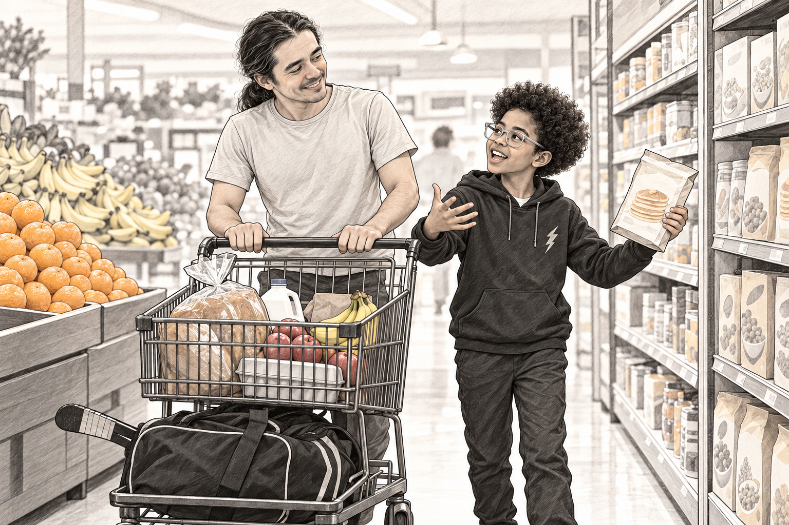
1. The Grocery List
The idea began between the cereal and the bananas.
Izzy was still wearing his Storm hockey hoodie. His hair had flattened slightly where his helmet had been, and he had pushed his clear glasses back up his nose approximately sixteen times since leaving the rink.
Beep steered the grocery cart around a pyramid of oranges.
“Bread, milk, apples,” he said. “What have we forgotten?”
“A chocolate cake.”
“That wasn't on the list.”
“It could be a very serious mistake in the list.”
Beep smiled. He spent a lot of evenings driving to practices and games, and Izzy liked these little trips together. Sometimes they talked about hockey. Sometimes they talked about nothing in particular. Tonight, Izzy described a save in which the puck had hit his pad, bounced up, and landed somewhere he had not expected.
“Where?” asked Beep.
“Behind me.”
“Ah.”
“But not in the net.”
“An important detail.”
They bought the bread, milk and apples. They also bought ingredients for pancakes, which Izzy considered a reasonable compromise.
The next morning, Beep walked with him to the school-bus stop. Adam was already there, shifting his backpack from one shoulder to the other.
Before their yellow bus arrived, another school bus went past.
This one was medium-sized: longer than a little short bus, shorter than the enormous ones. Izzy counted about ten windows along its side.
“What if somebody lived in that?” he asked.
“People turn retired buses into campers,” said Beep.
“Could you put a kitchen in it?”
“Yes.”
“And beds?”
“Yes.”
“A hockey rink?”
“Probably a very disappointing one.”
Adam laughed. “You could travel everywhere.”
“Somewhere,” Beep said. “Everywhere might take a while.”
Izzy kept looking down the road after the medium bus disappeared. He imagined a bed beside a window, his Kobo on a shelf, and a kitchen that went wherever the family went.
He imagined waking up in a forest.
Then beside a lake.
Then somewhere he could not picture yet.
His own school bus arrived. He and Adam climbed aboard, and Beep waved from the sidewalk.
Before finding his seat, Izzy turned back.
“Ask Mimi!” he called.
“Ask her what?”
But the doors were closing.
That afternoon, Beep found a new grocery list on the kitchen counter.
Bread.
Milk.
Apples.
One bus.
Underneath, in smaller writing, somebody had added:
Still maybe chocolate cake.
2. An Extremely Large Maybe
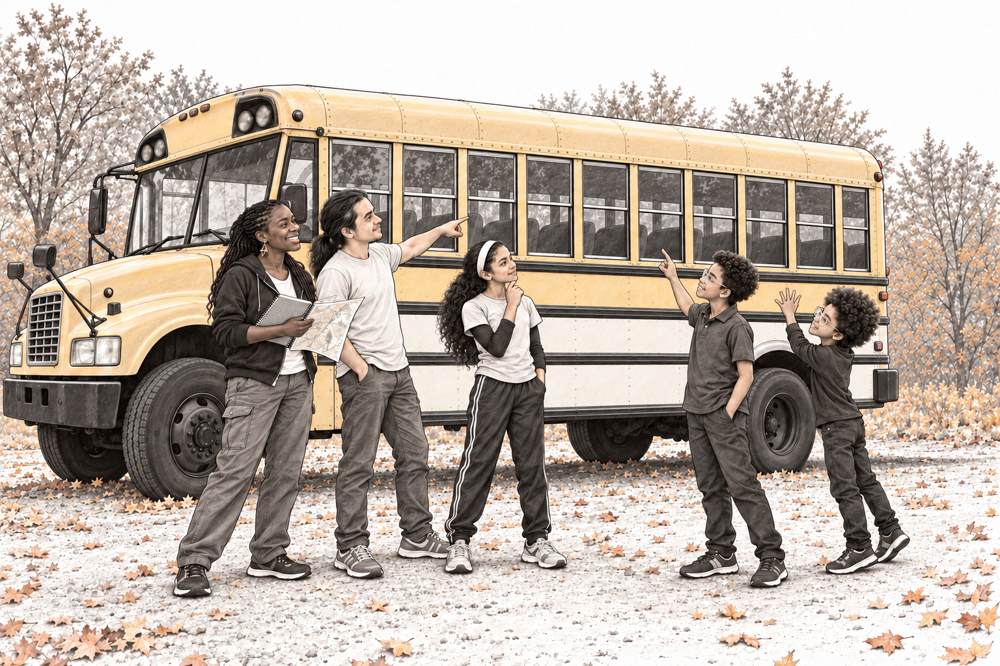
For the last two evenings, Mimi had watched Astérix and Obélix with the kids. There had been plenty of laughter, some arguments about which bit was funniest, and a disagreement over whether the popcorn bowl was actually empty.
It was empty.
Raph checked twice.
Tonight, after the movie, Izzy placed his grocery list in the middle of the table.
Mimi read it carefully.
“One bus,” she said.
“A medium one,” said Izzy. “We don't need a gigantic one.”
Ruth leaned over the page. At thirteen, she could spot a weak plan from across a room.
“Where would we put it?”
“And how would we pay for it?” asked Raph, who was twelve and suddenly sounded like a bank manager.
“And where would we go?” asked Mimi.
“North America,” said Izzy. Then, because it sounded exciting, he added, “And Central America.”
There was a silence.
Beep sat down.
“Well,” he said. “That is quite a lot of groceries.”
They did not buy a bus the next day.
They talked. They made lists. Mimi and Beep worked through the difficult grown-up questions, while the kids drew rooms on paper and discovered that three enormous bedrooms did not fit in something that also needed wheels.
They discussed a year away, schoolwork on the road, coming home again, and all the things they would miss.
Ruth wanted to keep running. Raph wanted people to play soccer with. Izzy wanted to stay in touch with the Storm, Adam and Wesley.
“No adventure is worth pretending those things don't matter,” Mimi said.
Several weeks later, they visited a retired school bus that was for sale.
It had ten passenger windows down each side, a proper nose at the front, and a smell of old seats, warm metal and forgotten field trips.
Izzy walked from front to back.
“This could be the kitchen.”
Raph stood in a narrow space between seats.
“This could be the world's smallest stadium.”
Ruth looked out a window. “This could be where I read.”
Mimi touched the back of a seat, thinking.
Beep stood beside the driver's seat, thinking even harder.
Nobody said yes immediately.
But on the drive home, Mimi asked, “If we did it, what would you call the bus?”
“The Pancake Express,” said Izzy.
“The Unbeatable Team,” said Raph.
“The Please Don't Forget Your Shoes,” said Ruth.
Then Beep said, “Ten Windows.”
Everyone went quiet for a moment.
That name felt like something they could see through.
3. A House That Used to Have Homework
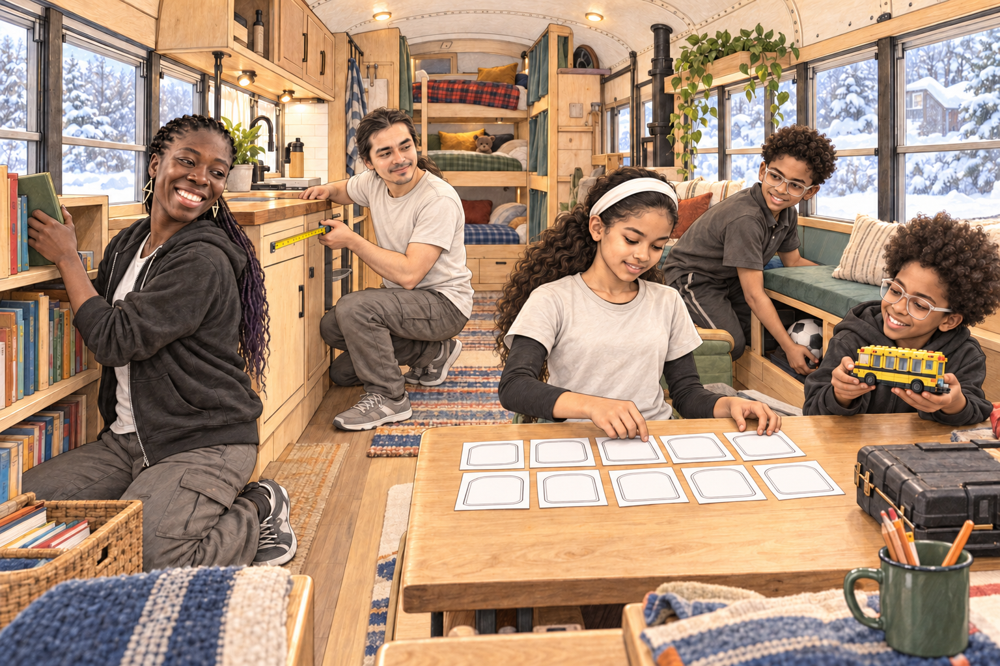
Autumn became winter while the bus slowly stopped being a school bus.
Experienced grown-ups helped Mimi and Beep with the serious work. The kids did not get to invent their own electricity, which disappointed Izzy until Beep explained that a surprise toaster was different from a surprising electrical problem.
The old seats came out. Proper travel seats with seat belts remained near the front. Cabinets, sleeping spaces and a little kitchen appeared behind them.
There were three bunks for the kids, a sleeping space for Mimi and Beep, a small bathroom, and a table that could somehow become three different things.
Mostly, it became covered in pencils.
Mimi made space for books and school supplies. Beep planned places for muddy shoes, groceries and equipment. Ruth insisted that each bunk needed a reading light. Raph tested how many soccer balls they truly needed.
The answer was fewer than Raph had hoped.
Izzy built a Lego version of the bus. His first model had a swimming pool on the roof.
“No,” said Beep.
“A tiny swimming pool.”
“Still no.”
The real bus kept its yellow body, with a cream stripe below the windows and a little blue compass painted near the door. It looked cheerful even on afternoons when everyone was tired and the driveway was covered in sawdust.
One Saturday, Ruth cut ten window-shaped cards from stiff paper.
“What are those for?” asked Raph.
“Stories,” she said. “One for every window.”
They would choose ten things from their year away and make a display when they got home.
“Ten best things,” said Izzy.
“Ten interesting things,” Mimi suggested.
“Ten places,” said Raph.
“Ten times we lost somebody's left shoe,” said Beep.
Ruth wrote TEN WINDOWS at the top of a notebook and added a question underneath:
What will we remember?
They passed it around.
Izzy drew a mountain, a huge wave, and himself making a spectacular diving save. Raph drew a soccer field. Ruth drew a path disappearing into trees.
Mimi drew five mugs on a table.
Beep drew a tiny screwdriver.
“That doesn't look adventurous,” Izzy said.
“You never know,” said Beep.
On a snowy evening, they stood inside their almost-finished bus while the driveway light shone through the windows.
It was not enormous. It was not perfect.
But when Mimi turned on the little reading lights, each bunk became its own small island.
Izzy climbed into his.
For the first time, going away felt real.
4. The Practice Disaster
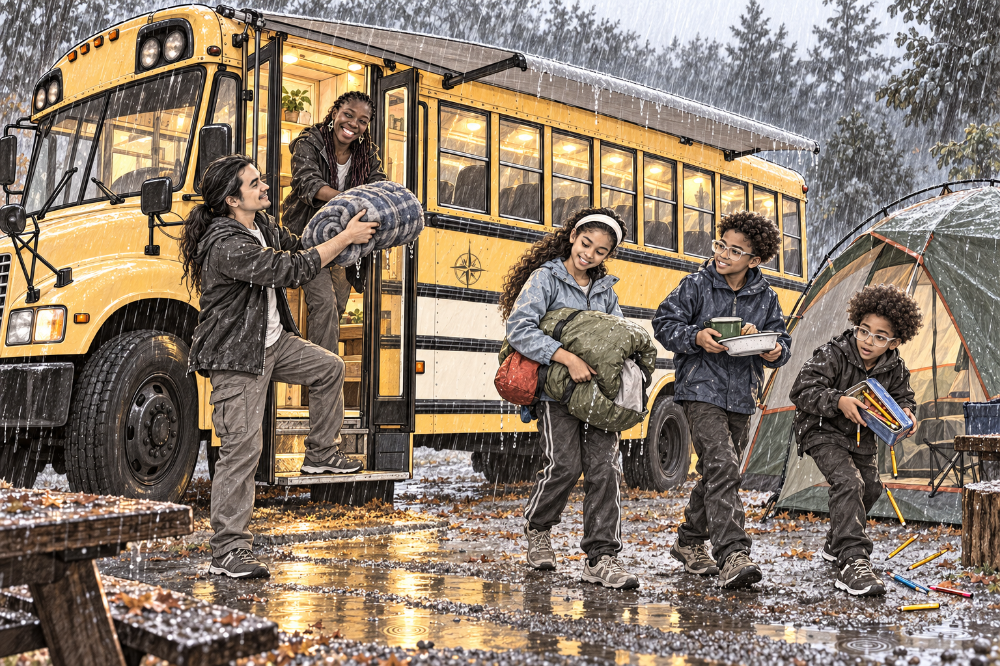
Their first trip lasted one night and took them to a campground not very far from home.
This was supposed to be a test.
“It is good to practise,” said Mimi.
“It is good to discover we forgot things while the house is still nearby,” said Beep.
Raph and Ruth helped put up a tent beside the parked bus. Izzy arranged the camping chairs as if they were important officials at a tournament.
Adam and Wesley had come to wave them off that morning. Wesley, small and quick, had worn his bicycle helmet with its mohawk fin. His little ear studs flashed when he turned his head.
“If the bus breaks down,” he had told Izzy, “you can sleep at my house.”
“We're not leaving forever.”
“I know. I'm just being useful.”
Now, at the campground, everything looked excellent.
The sky disagreed.
Rain started during supper. Then it got enthusiastic.
The family had planned to try both the tent and the bunks. Instead, they hurried damp bedding inside while Beep checked that their outdoor things were secure.
Ruth's sleeve dripped on Raph's plate.
Raph moved his plate onto a cushion.
Izzy sat on the cushion.
The plate survived. The peas had a much more complicated evening.
Then the pencil tin slid off the table.
Pencils scattered beneath everyone's feet.
For a moment, nobody spoke.
Mimi looked at the floor.
“I think our dining room has become a hedgehog.”
Ruth laughed first. Raph followed. Izzy laughed so hard that he had to put down his cup.
They collected the pencils. They changed into dry clothes. They ate the rest of supper at the little table, and the rain thudded on the roof like a drummer who had forgotten the song.
Later, Izzy lay in his bunk with his Kobo. The bus smelled of warm food and wet raincoats.
“Does this count as a story?” Ruth asked from above him.
“Not one of the ten best,” he said.
“What if best isn't the rule?”
Izzy thought about the peas. He thought about Mimi's hedgehog dining room.
Outside, the tent sat patiently in the rain.
He reached for the notebook and wrote:
First night. No mountains. Excellent disaster.
In the morning, the sun returned. Beep made pancakes, and they spread their damp things out to dry.
The adventure had not gone according to plan.
They had still all wanted to stay for breakfast.
5. The First Almost
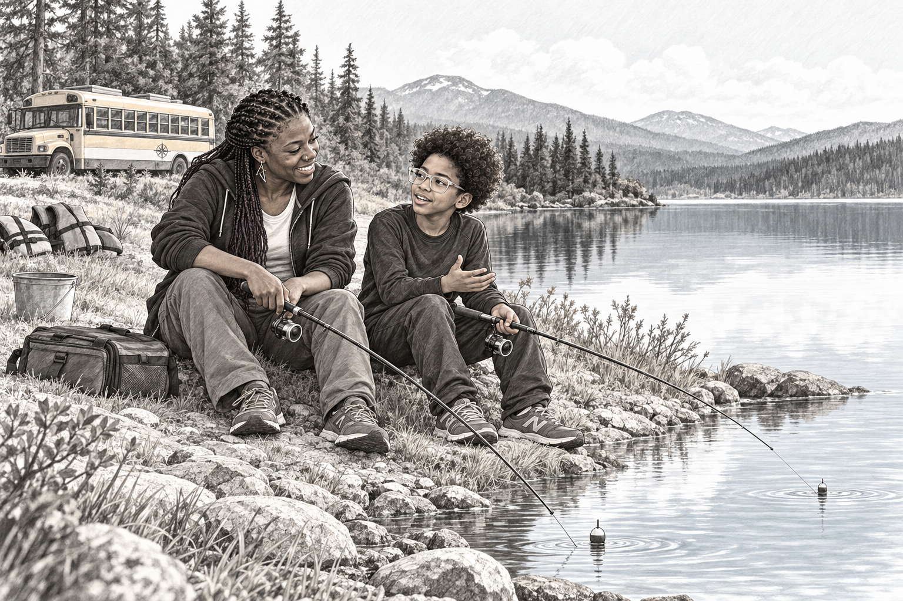
They left home in early May.
There were hugs, photographs, last-minute checks and one final search for a charging cable that was already in the bus.
Adam gave Izzy a drawing of their bus stop. Wesley gave him a Lego brick.
“For emergencies,” Wesley said.
“What kind?”
“The Lego kind.”
The first weeks carried Ten Windows west through Canada. They did not drive all day, every day. Sometimes they stopped because the grown-ups needed a rest. Sometimes a place looked interesting. Sometimes everyone simply needed to get out and run around.
Schoolwork happened most mornings when they were parked. Ruth read and wrote. Raph worked through maths and kept a soccer notebook. Izzy measured things, practised spelling and discovered that travelling did not mysteriously remove multiplication.
One afternoon, Mimi took Izzy fishing beside a lake.
Beep stayed at the bus with Ruth and Raph, sorting supplies and listening to a debate about which football team would win an imaginary tournament.
Mimi and Izzy found a quiet place on the shore. Their fishing gear was ready, but the lake appeared to have other appointments.
Nothing happened.
Then nothing happened again.
Izzy shifted his feet.
“What if all the fish have gone to a better lake?”
“Then I hope they sent this lake a message,” Mimi said.
He watched a small ripple cross the water.
After a while, he said, “The Storm had a game.”
“I know.”
“I saw the message.”
Mimi waited.
“They won. Which is good.”
“It is.”
“But I wasn't there.”
She looked at him. “You can be happy for them and sad about missing it.”
Izzy had thought he was supposed to choose one feeling. It was a relief to discover he could have both.
They talked about saves, teammates, and what he would say when he called home. Then they talked about breakfast. Then they stopped talking, and that felt comfortable too.
Their floats bobbed.
A fish briefly appeared near the surface, examined the situation, and went away.
“Almost,” whispered Izzy.
On the walk back, Mimi carried one bag and Izzy carried the other. They had caught no fish.
Raph met them beside the bus.
“Anything?”
“An extremely suspicious ripple,” said Izzy.
That evening, he drew the ripple in the notebook.
Under it, he wrote:
The first almost. Also, two feelings can fit in one person.
He did not know whether a ripple deserved a whole window.
He hoped they would remember it anyway.
6. Ruth and the Hill That Kept Going
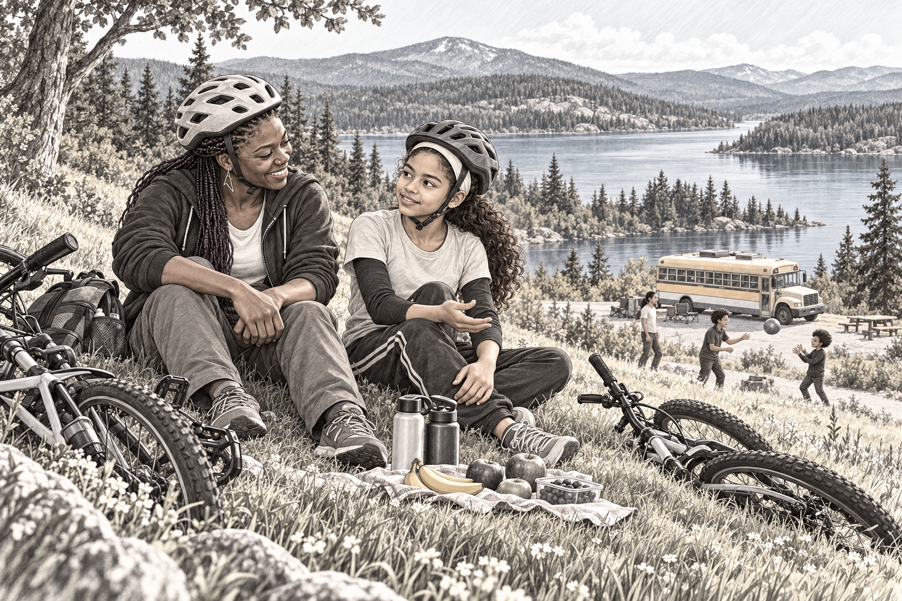
By June, everyone had learned some important facts about living together in a bus.
The person nearest the cupboard had to pass things.
Socks could travel farther than anyone expected.
And if Ruth said, “I need five minutes by myself,” it helped to give her five minutes by herself.
She loved her family. She also loved space.
One morning, Mimi suggested a bicycle ride, just the two of them. Ruth put on her helmet and checked that she had water. They followed a quiet path away from the campground, while Beep and the boys remained near Ten Windows.
At first, Ruth rode fast.
Then they reached a hill.
The hill kept being a hill.
It seemed to have no interest in becoming anything else.
Mimi slowed down. Ruth pushed harder, then stopped beside a patch of grass.
“I should be better at this,” she said.
“At hills?”
“At everything.”
Mimi stopped beside her.
Ruth stared at her shoes. “My friends have track practice. They're getting faster. And sometimes they tell me about things at school, and I don't even know who they're talking about.”
The words came out in a rush, as if they had been running ahead of her for days.
“I wanted this trip,” she added. “I still want it.”
“That doesn't mean every part has to feel easy.”
Ruth picked a blade of grass and twisted it between her fingers.
“Are you missing things too?”
“Of course,” Mimi said. “And I'm enjoying things. Sometimes in the same minute.”
They sat together. Nobody tried to turn the conversation into a lesson.
Eventually, Ruth said, “Can we walk the bikes for a bit?”
“Absolutely.”
At the top, the path opened onto a view of trees, water and distant hills. Their family looked tiny below: Beep by the bus, Raph with a ball, Izzy attempting to catch it in an unnecessarily dramatic way.
Ruth laughed.
They ate a picnic. Mimi listened while Ruth described a running race she remembered from school, including the exact moment she had thought she could not keep going.
“And then?” Mimi asked.
“I kept going.”
On the ride back, Ruth did not try to win against the hill.
That evening, she drew the path in the notebook. Beside the steep part, she added two bicycles being pushed by two people.
Izzy studied it.
“Did you stop?”
“Yes.”
“Did that ruin the ride?”
Ruth looked at him.
“No,” she said. “That was the good bit.”
7. The Team With No Stadium
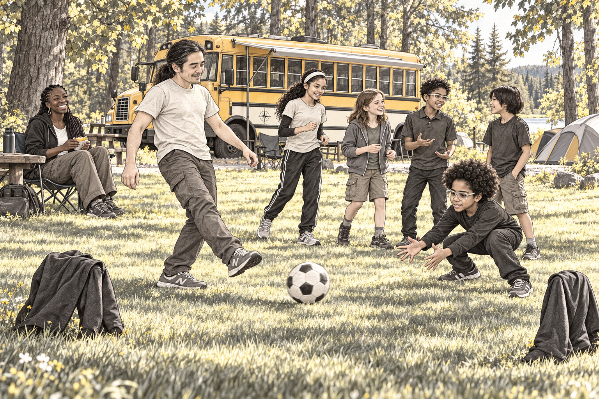
In July, after more weeks of travel, Ten Windows reached a campground in the United States.
Tall trees stood around the sites. Beyond the bus was a clearing with enough flat space to make Raph immediately start measuring an imaginary soccer field with his feet.
There were no proper goalposts.
Raph found that offensive for approximately three minutes.
Then two children from a nearby campsite asked if they could play.
One was called Eli. The other, his sister June, announced that she liked soccer but refused to let anybody tell her she had to stay in one position.
“Fair,” said Ruth.
They made goals from bags and jackets, agreeing to keep the ball away from tents and people having quiet afternoons.
Izzy wanted to be goalkeeper.
Then striker.
Then goalkeeper again.
“Your transfer market is very busy,” Beep told him.
Raph began explaining an old World Cup match.
Izzy interrupted with another match.
Raph answered with a player.
Izzy answered with a different player.
June watched them.
“Are we playing soccer,” she asked, “or discussing soccer until next winter?”
They played.
The teams changed whenever someone wanted water. Ruth ran after almost everything. June invented a celebration that involved turning in a small circle. Eli was excellent at finding passes that looked impossible until the ball arrived.
Raph missed having his usual teammates around him. He also discovered that Eli passed differently, June tried unexpected things, and Ruth was faster than people remembered when they were planning to beat her.
It was a new team, which meant he had to pay attention.
Beep spent a while helping Izzy practise saves on a clear patch of grass. The shots were gentle. Izzy still added dramatic commentary.
“The crowd cannot believe it!”
“The crowd is having a sandwich,” said Mimi from her chair.
Izzy caught the next ball and held it proudly.
Later, everyone sat together while the adults chatted. Mimi asked Raph what he liked most about the afternoon.
He considered saying his best goal.
Instead, he said, “When June passed it back even though she could have shot.”
“Why?”
“Because she knew I'd seen the space.”
That night, Raph drew the jacket goalposts in the notebook.
He wrote:
You don't need your old team to find a new teammate.
Izzy added a drawing of himself saving a ball that was approximately the size of a moon.
Ruth wrote underneath:
Ball size disputed.
By morning, the page had become one of their favourites.
8. Tuesday, Unfortunately
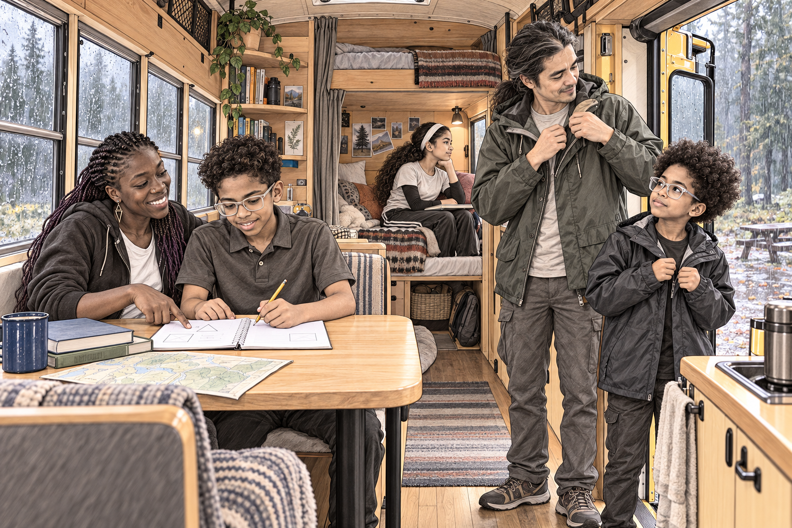
August included a morning so wet that even the puddles seemed fed up.
It was Tuesday.
Nobody had done anything wrong to Tuesday, but Tuesday behaved as if they had.
Raph could not understand a maths question. Izzy had lost his favourite pencil. Ruth was trying to write an essay while both boys discussed whether a player from one era would beat a player from another.
Mimi asked for quieter voices.
Beep accidentally put his elbow on Ruth's work.
The table was too small. The rain was too loud. Somebody's toast was too cold.
“I don't like school in a bus today,” said Izzy.
“Neither do I,” said Raph.
Ruth shut her notebook.
“I don't like anything in a bus today.”
That was the moment everyone stopped pretending this was a wonderful learning opportunity.
Mimi took a breath.
“Right,” she said. “We need a different morning.”
Ruth had a quiet break in her bunk. Mimi sat with Raph and worked through the question slowly, one piece at a time.
Beep put on a raincoat and went for a walk with Izzy.
They did not go far. They followed a campsite path, stepping around puddles that turned out to be deeper than they looked.
“This is like walking to the bus stop,” Izzy said.
“Except our bus is behind us.”
“And Adam isn't here.”
“No.”
They walked a little farther.
“Do you ever want to go home?” Izzy asked.
“Some days,” Beep said. “Mostly, I want the difficult part of the day to get easier.”
Izzy thought about that.
He wanted Adam. He wanted hockey. He also wanted to see what was around the next corner of their trip.
It was annoying that all those wants could happen at once.
When they got back, Raph had solved the maths question. Ruth had moved her essay to a little shelf desk. Mimi was making something warm to drink.
They changed their school routine that afternoon. Different subjects could happen at different times. Quiet reading could happen before everyone else woke up. Walking and looking were useful, but they were not excuses to skip every piece of writing.
Tuesday improved slightly.
Izzy found his pencil inside his own hoodie pocket, which did not improve his argument about mysterious pencil thieves.
That evening, the notebook lay open on the table.
Nobody drew a mountain.
Mimi wrote:
Today was hard. We changed the plan.
Ruth added:
That counts.
Izzy stared at the words for a while.
Then he drew a very grumpy raincloud.
9. The Day the Wind Stole September
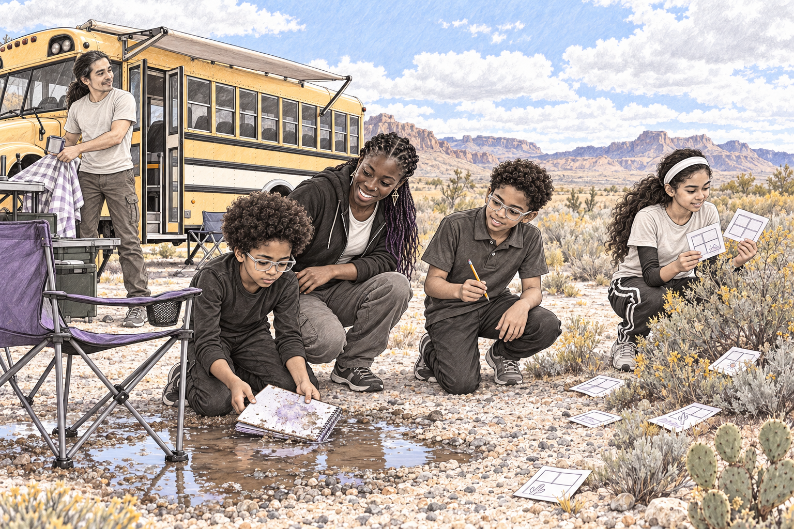
By September, the notebook was thicker than it had been at home.
There were drawings, postcards, pressed paper wrappers, little maps and pages where everybody had written at once. Three of Ruth's window cards were finished. The rest were tucked inside the back cover, waiting.
Ten Windows was parked at a campsite in the southwestern United States. Beyond the nearby bushes, the landscape opened wide under a huge sky.
Izzy had been waiting for a place like this.
“This,” he declared, “is definitely a best thing.”
He drew the bus looking tiny beneath distant ridges.
Then a gust of wind arrived.
It flipped the outdoor tablecloth, knocked over an empty cup and made the awning flap. Beep and Mimi immediately started putting things away.
Raph brought in the chairs. Ruth carried the supper dishes.
Izzy rushed through the open door with a bag of supplies.
The notebook, lying near the doorway, opened like a startled bird.
Paper lifted.
Cards fluttered.
And the whole book slid out onto the ground.
“Oh, no.”
It was not a dramatic disaster with thunder and lightning.
It was worse in a very ordinary way: a book they loved had landed in muddy water left from an earlier shower.
They found it trapped beneath a camp chair. Two cards were against a bush. Another had caught under the bus, and Beep retrieved it once everything was settled.
Inside, most pages were still readable. Some were smudged. The most recent page, drawn in a pen that apparently disliked water, had become a purple-grey cloud.
Izzy stared at it.
His enormous landscape was gone.
The words underneath were gone too.
“I ruined it.”
“You carried supplies,” said Mimi. “The wind carried the book.”
“I should have put it away.”
“We all could have,” Beep said gently.
They spread the damp pages where they could dry. Ruth put the cards between clean sheets of paper. Raph found a pencil and tried to remember what had been on the ruined page.
“The bus was here,” he said, drawing a small rectangle.
“The ridge was higher,” said Izzy.
“Then show me.”
Izzy sat down beside him.
Their second picture was not as good as the first.
It had a bus with crooked wheels and an extremely suspicious cactus.
But now it also had five tiny people collecting their story from the ground.
Ruth looked over their shoulders.
“Keep that bit,” she said.
So they did.
10. A Map Made of People
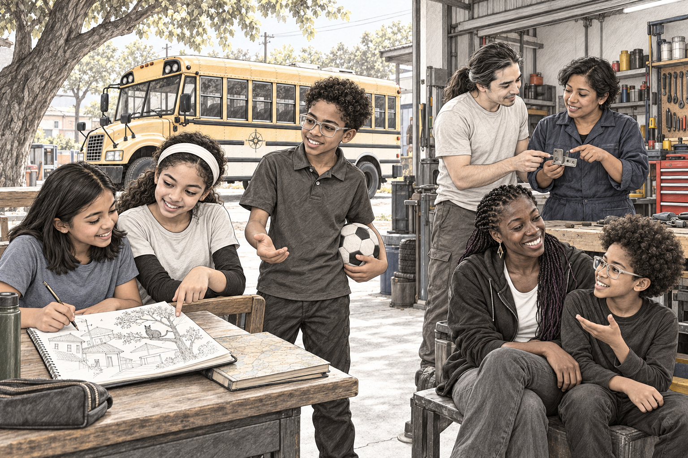
It took several more weeks of driving, resting, lessons and ordinary errands before they were travelling through Mexico.
The days were full of new sounds, unfamiliar streets and words they were still learning to say. Sometimes they understood enough. Sometimes they understood almost enough, which could be much funnier.
Raph kept a little list of useful Spanish words. Izzy added a football beside every word he thought might help him join a game.
One morning, the bus table refused to latch properly.
This mattered because tables were supposed to stay where they belonged while the family travelled.
Beep examined it, frowned, and decided they needed help before continuing.
They stopped at a workshop run by a woman called Elena. Her daughter Inés was drawing at a desk near the office.
While Elena inspected the problem with Beep, Inés looked at the family's notebook.
“Your bus?” she asked, pointing to the crooked picture.
“Yes,” said Raph. “But the real wheels are better.”
Inés grinned.
She showed them a drawing she had made of her own neighbourhood. It included a shop, her grandmother's house, and a tree with a branch shaped like a sitting cat.
Ruth added the workshop to their travel page. Inés corrected the roof and drew the cat-tree in the corner.
Raph noticed a ball beneath her desk.
That led to a conversation involving Spanish, English, hand gestures and a drawing of a goal.
It turned out you could disagree about the best football team without sharing very many words.
Izzy found that encouraging.
Mimi sat with him while he practised asking whether someone wanted to play. He said it quietly first, then louder, then accidentally asked the notebook.
“The book would love to,” Mimi said. “Unfortunately, it has no feet.”
After the table was fixed, Elena invited them to stay for a cool drink in the shade. She and Beep talked about the bus. Inés told Ruth about a comic she was making, where the cat-shaped branch kept changing places overnight.
Elena waved to a customer arriving with a dusty bicycle. Inés closed her drawing book and asked Ruth whether she could see the finished travel pages someday.
They were people having an ordinary afternoon, and the family had been lucky enough to share part of it.
When they left, Inés gave Ruth a small drawing of the tree.
Raph put the workshop on their map.
Izzy added five words underneath:
We stopped because something broke.
Then he added another sentence:
I am glad it did.
11. The Movie Without a Roof
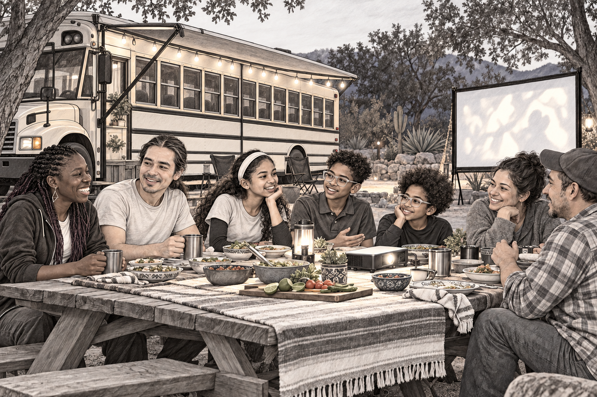
Later in November, Ten Windows stayed for a while at a campsite where evening conversations sometimes lasted longer than supper.
There was another family nearby: a boy called Diego, his younger sister Ana, and their parents. Diego liked building things. Ana liked asking questions that nobody could answer quickly.
“Why do you live in a bus?” she asked Izzy.
He considered several exciting replies.
Finally, he said, “Because we wanted to find out what happened if we did.”
Ana nodded as if this was a sensible scientific experiment.
One evening, they decided to watch a movie outside under the bus awning.
There was a small screen, a collection of camping chairs, and a supper in which different people brought different things. The grown-ups sorted out the practical details while the kids debated who should sit where.
Raph wanted a perfect view.
Ruth wanted a chair that did not squeak.
Izzy wanted to sit beside Mimi.
This last part was easy.
Mimi had spent plenty of time taking the kids to movies back home. Sitting beside her with a bowl of popcorn felt familiar, even with the open sky above the awning and a different campground all around them.
The film was funny. Diego laughed first at one bit, which made Izzy look at him and laugh harder. Ana asked one question during a very quiet scene.
Raph whispered, “I was wondering that too.”
At the interval they invented, because somebody needed more water, Mimi asked everyone for their favourite moment from the day.
“Not the movie,” said Ruth. “That's cheating. We're still watching it.”
Diego chose fixing his bicycle chain with his dad.
Ana chose seeing a lizard.
Raph chose winning a very short soccer game.
Ruth chose a conversation she'd had with Ana about drawing people.
Beep chose finding the missing tin opener.
Izzy could not decide.
Mimi waited rather than choosing for him.
Eventually, he said, “This bit.”
“The interval?”
“Everyone sitting here.”
Nobody laughed at that answer.
Later, after their neighbours had gone back to their own site, Mimi helped Izzy find a word he wanted for his writing.
Then they chatted about the film, his friends, and a question that had been bothering him about tomorrow's schoolwork.
The world outside Ten Windows was enormous.
The light above their table was small.
Izzy wrote a page about the evening and drew the chairs in a circle.
For once, he did not make himself taller than everyone else.
He wanted the circle to be the important thing.
12. The Place Between the Places
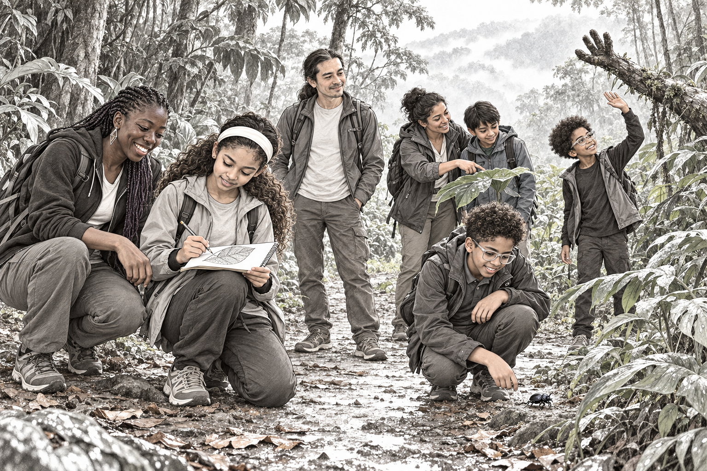
December found the family in Guatemala, after a gradual journey south with more stops than Izzy could fit on one page.
He had imagined that travelling farther would mean doing bigger and bigger things.
Instead, one morning meant waiting for rain to ease.
Another meant changing their route.
A third meant deciding that the place they had planned to reach could wait until another day.
“This trip has a lot of not-yet in it,” he told Beep.
“Most things do.”
They stayed at a small campground near a broad walking trail. A local guide called Rosa took them out one clear morning, with her nephew Tomás, who was on a school break.
Rosa asked what they wanted to notice.
“Animals,” said Izzy.
“Something I can draw,” said Ruth.
“Something that isn't another maths question,” said Raph.
Rosa smiled. “Let's see what the path gives us.”
The path gave them leaves, damp earth, small sounds and a fallen branch that looked rather like a person waving.
Tomás thought it looked like a goalkeeper.
Izzy immediately agreed.
They walked slowly. Rosa knew where to stop and listen. She also knew that Ruth wanted a little time to sketch, and that Raph had discovered an interesting beetle doing a job he did not understand.
Mimi stood beside Ruth while she drew.
“It's taking too long,” Ruth said.
“Who says?”
Ruth looked up. Nobody was impatient. Beep and Izzy were comparing the waving branch with the world's most awkward hockey stick.
She kept drawing.
Farther along, mist drifted between the trees. The family stopped at a sheltered spot, shared their snacks and talked.
Tomás wanted to know what sleeping in a bus was like.
“Good,” said Raph. “Except sometimes you can hear people breathing.”
“People often do that,” Beep said.
Tomás laughed.
Ruth had a page full of leaves. Raph remembered the beetle. Izzy carried a drawing of an exceptionally awkward branch and crumbs from the shared snacks.
They found a morning they would have missed if they had hurried on.
Back at the bus, Izzy looked at their route map. The campsite sat between two places they had circled as important.
He drew a new circle around it.
Ruth placed her sketch beside his map.
Mimi suggested a title for the page.
“The place between the places?”
Izzy shook his head, thinking.
Then he crossed out the two old circles and made all three the same size.
“It was a place too,” he said.
13. The Night of the Unfinished Fort
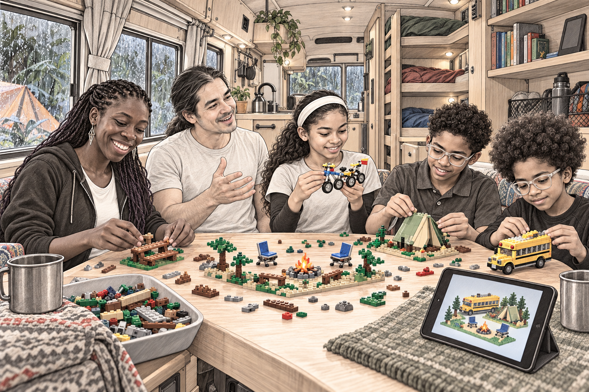
By January, they had reached Costa Rica.
They stayed long enough at one campground to stop thinking of every day as a departure day. They explored, rode their bikes on suitable paths, did their lessons and helped with the normal jobs that followed them everywhere.
Laundry had not decided to stay home.
Neither had washing-up.
One rainy evening, Izzy missed Wesley's house so suddenly that it surprised him.
He missed the Switch. He missed supper there. He missed the movie afterwards, when everyone claimed to be awake and somebody plainly wasn't.
Most of all, he missed walking into a familiar room and knowing where everything was.
A message from Wesley arrived with a photograph of a Lego fort. Adam had helped build it. There was one enormous gap in the wall.
Waiting for your part, the message said.
Izzy smiled.
Then his face changed.
“What?” Mimi asked.
“What if they finish everything before I get back?”
Mimi sat beside him.
“They will do things while you're away. You will too. Friendship doesn't mean pressing pause on everybody.”
Izzy knew this was sensible. He did not like it very much yet.
Beep brought the Lego box to the table.
“Shall we build them something?”
Raph began a tiny campsite. Ruth made a bicycle with a suspicious number of wheels. Mimi built a bench. Beep produced a structure that might have been a shelter or might have been an unfortunate sandwich.
Izzy built Ten Windows.
Then he added a tent.
Then two empty seats beside a little campfire.
“For Adam and Wesley,” he said.
They took a picture and sent it with a message saying that there was room for friends in their next adventure.
While the rain tapped the roof, Beep told them about a camping trip from years ago when he had forgotten something obvious and spent most of supper trying to pretend it wasn't important.
“What was it?” asked Raph.
“The food.”
The kids stared at him.
“Some of the food,” Beep corrected. “Enough of it to make the story inconvenient.”
Mimi laughed. Then everyone laughed, and Izzy felt the tight part in his chest loosen a little.
Before bed, he read his Kobo in his bunk. Across the aisle, the Lego bus stood on a shelf.
It had a place for everyone already there.
And a place for people they would see again.
In the notebook, Izzy wrote:
You can miss somewhere without wanting to erase where you are.
14. The Question Nobody Had Written Down
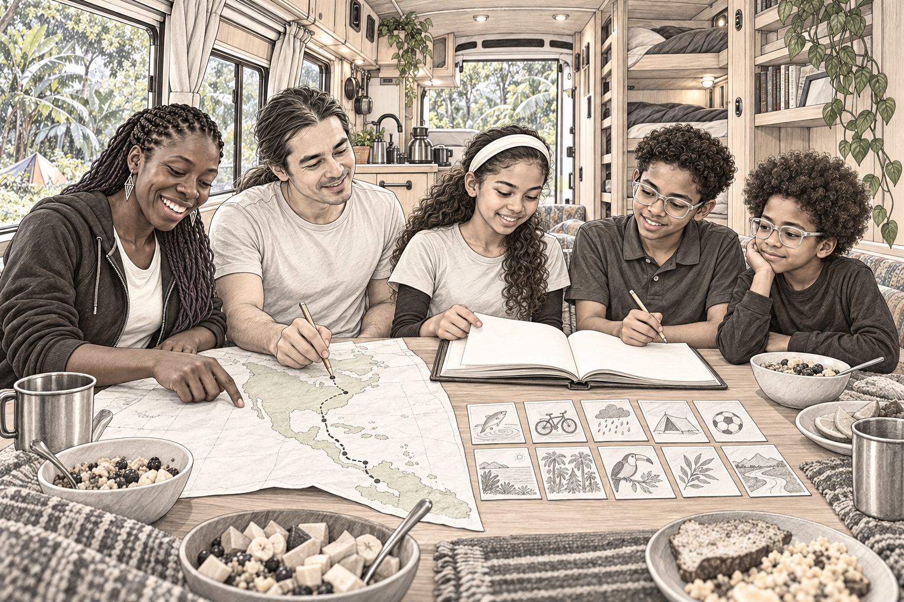
Toward the end of January, Mimi spread their map across the breakfast table.
Beep put a mug near one corner so it would stop rolling itself shut.
It was time to plan the long journey north.
“Already?” asked Izzy.
“We've been away nearly nine months,” Ruth said.
“But there's more.”
There was always more. More roads. More places. More people they had not met. More things that somebody's cousin said were absolutely worth seeing.
A whole continent did not become small just because you carried a map.
They had promised themselves a year. Getting home would take many weeks, with proper stops along the way.
Raph wanted to revisit the workshop where they had met Inés.
Ruth wanted another long bicycle ride with Mimi.
Beep wanted time for small repairs and days without driving.
Mimi wanted to hear what each of them was thinking before they chose the route.
Izzy stared at the notebook.
At last, he said, “What if we get home and forget?”
Everyone was quiet.
“I can't fit it into ten windows,” he continued. “I can't even pick the best ten. If I pick the lake, then what about the movie? If I pick the forest game, what about Wesley's message?”
“And Tuesday,” Ruth said.
“I wouldn't pick Tuesday.”
“But you remember it.”
He did.
He remembered the rain, the maths problem, and walking with Beep. He remembered how much better the bus had felt afterwards.
Mimi reached for a larger blank book they had bought during a grocery stop.
“What if the windows are just the beginning?”
Ruth opened it.
There was room for longer stories. For the nearly things. For the ordinary mornings. For pictures that did not fit on cards.
Raph picked up a pencil.
“What do we call it?”
They tried several titles.
One involved pancakes.
Another involved a goalkeeper who saved a notebook from a hurricane, which Beep pointed out had not actually happened.
Then Mimi said, “The Places We Almost Missed.”
Izzy looked at the blank first page.
“Yes,” he said.
They decided that everyone would help. Nobody had to remember the same day in the same way.
The ten cards could stay. The larger book could hold what lay around them.
Beep traced the first part of their northbound route.
Outside, somebody's bicycle bell rang.
Izzy had wanted more time.
Now, for the first time, he could also picture coming home with something to share.
15. The Long Way Back
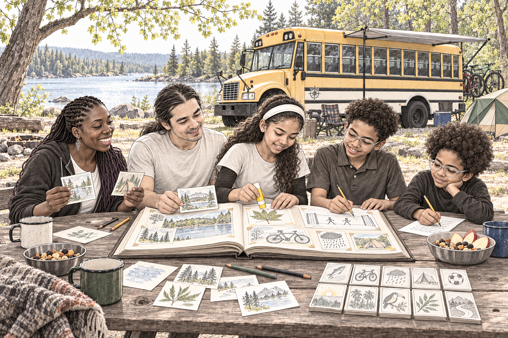
February, March and April filled slowly with roads leading north.
They travelled back through Central America and Mexico, then through the United States toward Canada. There were long stretches, short days, rest days, lessons and errands.
The return was an adventure of its own.
At a familiar Mexican workshop, Elena waved when she saw the yellow bus. Inés had finished several pages of her comic. The cat-shaped branch had become a very demanding character.
Ruth showed her their new book.
Inés drew a tiny cat in the corner of the workshop page and said it could come on the rest of the journey.
Raph and Izzy played soccer with her again.
They still disagreed about teams.
They understood a few more words this time.
Farther north, a loose cupboard catch required attention. Beep fixed it while Raph passed him what he needed. Izzy found this disappointingly similar to the little screwdriver drawing at the beginning of their notebook.
“You predicted it,” he told Beep.
“I have met cupboards before.”
Schoolwork continued. Mimi helped Ruth work through a difficult piece of writing, and listened when Raph was worried about returning to class. Beep walked with Izzy on mornings when they were parked, sometimes talking about hockey, sometimes saying very little.
The larger book grew.
They copied favourite pages from the notebook. They added things someone else had remembered.
Ruth remembered the sound of bike tyres on gravel.
Raph remembered June's pass.
Mimi remembered Izzy admitting he had two feelings at the lake.
Beep remembered five people searching for muddy paper and nobody deciding the story was over.
Izzy discovered that a day could be bigger when everyone helped describe it.
One evening, he tried to write about the windy campsite. He could not remember the colour of the cup that had blown over.
“Does that matter?” Ruth asked.
“It might.”
“Write what you do remember.”
So he wrote about Raph sitting beside him to redraw the landscape.
That mattered more than the cup.
When they finally returned to the Canadian lake they had visited near the beginning, they recognised the bend in the shore.
Mimi and Izzy went fishing again.
They still did not catch anything worth boasting about.
This time, Izzy was not disappointed.
He watched the water and told Mimi what he wanted to do when he saw Adam and Wesley.
Then he asked if she wanted to hear a completely unreasonable plan for another trip.
She smiled.
“Of course.”
16. One More Window
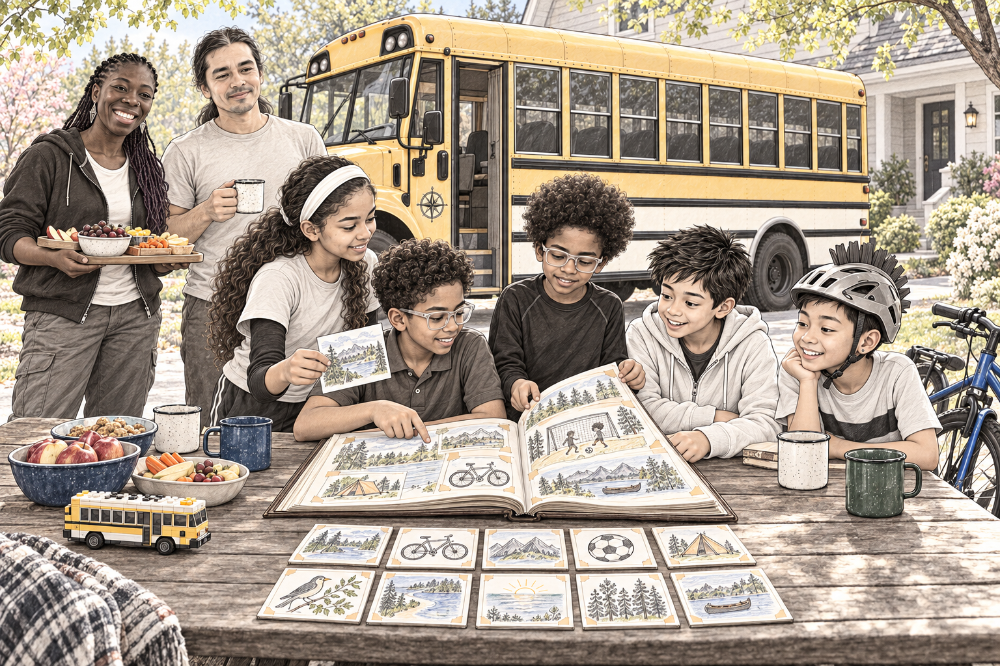
Ten Windows came home in May, one year after leaving.
The driveway looked smaller than Izzy remembered.
The house smelled familiar and strange at the same time. He knew where the stairs went. He had forgotten how far the kitchen was from his bed.
“There is so much walking indoors,” he told Raph.
Raph opened a cupboard without asking anyone to move first.
He looked deeply impressed.
Adam and Wesley came over that weekend. Wesley arrived on his bicycle, his mohawk-fin helmet making him easy to spot before he reached the driveway.
Izzy showed them the bunks, the kitchen, the shelf for his Kobo and the tiny Lego bus.
“Did you bring my emergency brick?” Wesley asked.
Izzy pointed to one corner of the model.
“Important structural equipment.”
“Excellent.”
Mimi brought snacks outside. Beep set chairs near the parked bus. Ruth spread the ten window cards across a table, and Raph put their large book beside them.
Choosing the cards had taken much longer than anybody expected.
There was the bus before it became a home.
There were wet camping things, a ripple on a lake, two bicycles on a hill, jacket goalposts, a grumpy Tuesday, a crooked landscape, a workshop, a circle of movie chairs, and a page with room for things they had not planned.
“But that's not all of it,” Adam said after looking through the pictures.
“No,” said Izzy. “That's what the book is for.”
They read bits aloud. Sometimes two people corrected each other. Sometimes the corrections made everyone laugh. Mimi told a story about a quiet conversation. Beep told one about the cupboard. Ruth showed her drawings. Raph explained the pass.
Izzy had gone away looking for the ten biggest things.
He had come home with a book full of small things that belonged together.
On his first morning back at the bus stop, Beep walked beside him. Adam was waiting.
They were talking about an imaginary match when the medium school bus passed again.
Ten windows along its side.
Izzy watched it go.
“Would you do it again?” Beep asked.
Izzy thought about rain, long roads, missed games, new friends, mountains, ordinary groceries and reading in his bunk.
“Yes,” he said. “But maybe not next Tuesday.”
Beep laughed.
That afternoon, Izzy opened the big book to its final page.
There was still some blank paper.
He drew a small window in the corner and wrote three words beneath it:
What happens next?